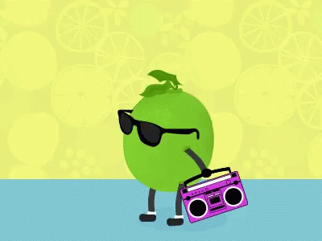

Key Lime Pie

ingredients
- 1/3 of a 1-pound box of graham crackers
- 5 taplesppons melted butter (unsalted)
- 1/3 cup sugar
- 3 egg yolks
- 2 teaspoons lime zest
- 1 (14-ounce) can sweetened condensed milk
- 2/3 cup key lime juice
- 1 cup chilled whipped cream
- 2 tablespoons confectioners' sugar
steps
- For the graham cracker crust: Preheat the oven to 350 degrees F.
- Break up the graham crackers; place in a food processor and process to crumbs. If you don't have a food processor, place the crackers in a large plastic bag; seal and then crush the crackers with a rolling pin. Add the melted butter and sugar and pulse or stir until combined. Press the mixture into the bottom and side of a pie pan, forming a neat border around the edge. Bake the crust until set and golden, 8 minutes. Set aside on a wire rack; leave the oven on.
- For the filling: Meanwhile, in an electric mixer with the wire whisk attachment, beat the egg yolks and lime zest at high speed until very fluffy, about 5 minutes. Gradually add the condensed milk and continue to beat until thick, 3 or 4 minutes longer. Lower the mixer speed and slowly add the lime juice, mixing just until combined, no longer. Pour the mixture into the crust. Bake for 10 minutes, or until the filling has just set. Cool on a wire rack, then refrigerate. Freeze for 15 to 20 minutes before serving.
- For the topping: Whip the cream and the confectioners' sugar until nearly stiff. Cut the pie into wedges and serve very cold, topping each wedge with a large dollop of whipped cream.
source